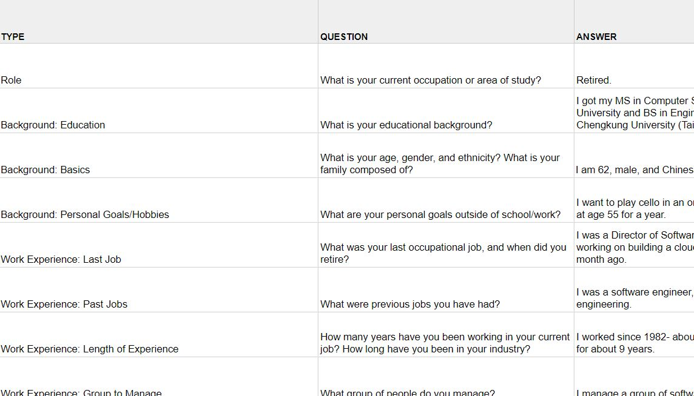
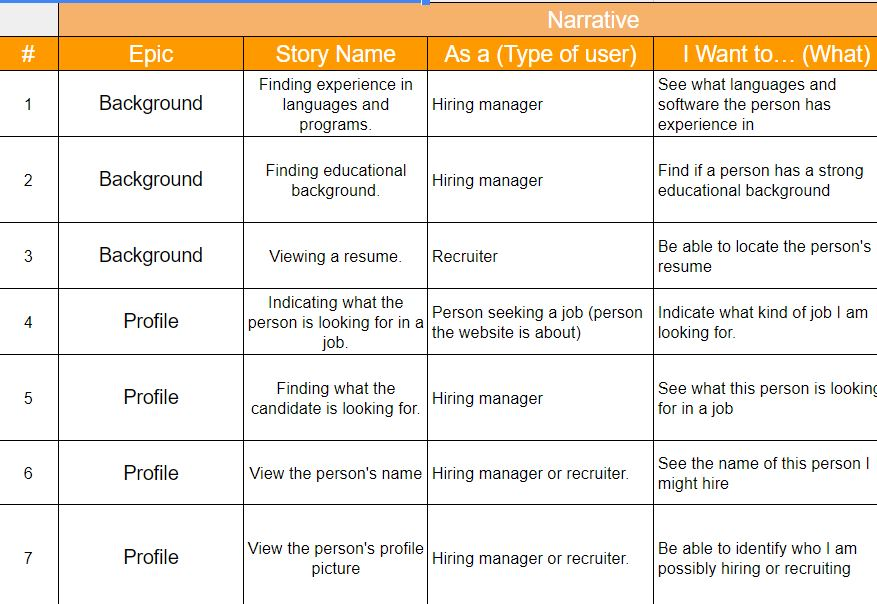
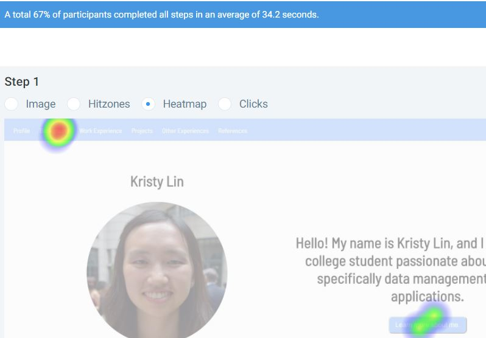

User interviews are important to gain an insight on users to know what these users are looking for and expect to see when looking at a professional portfolio. Questions involved include getting to know their background, their objectives and motivations, pain points, and use of the website (what they are looking for).
Competitor analysis is done to inspect what other competitors are doing and how they are doing it. Specific competitors were chosen to help develop an understanding of what elements work or do not work well, which can be applicable when creating the product. Both direct (other professional portfolios) and indirect competitors (other websites that satisfy a similar user need) were analyzed.
A feature value matrix organizes features based on business value, user value, and technical effort. The features were chosen based on what users wanted and what elements worked well with other competitor products.
Elements that provide the best business value, best user value, and least technical value had the highest priorities in feature prioritization. Information from the feature value matrix is compiled to create this. To build the website, the highest priority features were touched on first before hitting lower priority features.
User stories help separate specific sets of features based on specific users to see how each relates to the user experience. These stories were approached by thinking about what users would be using the website and what actions each user wants to do and accomplish with the task.
Cognitive walkthroughs help focus on core features of a product and gain an insight on the user’s perception of how to accomplish certain tasks away from the developer’s perspective. Some challenges included forming a sequential order of task questions that seemed plausible and preventing them from trying to offer suggestions (have them just focus on the task at hand).
Usabilityhub.com was used to perform two usability tests: one with navigation, and one with a 5 second test. The navigation test to find where the details about education is located was made to ensure educational background can be located as young potential hire. The 5 second test was performed to see if the title page allowed users to remember key points (such as name and profile picture) and if what they saw intrigue them to continue looking at the rest of the content on the website. A challenge for this was having users that did not fully read the instructions before performing the test. Results showed that all people were able to identify at least the name and profile picture with the 5 second test, and some people had trouble finding where educational background is located on the website.
 Out of all user research, user interviews provided the most information. A software engineering manager who was interviewed mentioned how the website would mostly be used for secondary information after viewing a resume. With that, hirers would be looking for information that can be further explained outside of the resume. A program manager mentioned how the website should bring out personality to give them a feel on how they might work or fit with a team, a fellow student mentioned linear scrolling to easily access all information on the website, and a district manager in business mentioned having a personal statement. Most users mentioned the importance of having a name, image, background, projects, resume, contact, and work experience on the website. Competitor analysis revealed that a simple color scheme, minimalistic design, and clear sectioning worked well, and cluttered pages, a lack of images, lack of professionalism, and a missing profile picture did not work well. The feature value matrix and feature prioritization helped organize the data collected and pinpoint what information should be approached first for the website.
Following with user testing, cognitive walkthroughs identified if users could find specific elements on the website and if they saw what they expected to see. Most users could identify the purpose of the website and find most sections. The following issues were found: confusion on what the “Other Experiences” section is comprised of, whether or not the Projects” section included projects from the “Work Experience” and “Other Experience” sections, expectation of clickeable logos for listed companies worked at, not needing a “References” section, trouble finding Resume link, and issues reading the text on the navigation bar. The most noticeable issue is some sections need more descriptive titles to help people locate where they want to find certain information. Usability tests simulated what users would click on and see first, which revealed that education information was not easy to find for a good portion of users. User stories helped narrow down what each type of user that might use the website would be doing to understand each user type’s own goals. All these elements of user testing revealed many faults that could be fixed and built upon.